Koruyucu
"Birikimin güvende, adım adım."
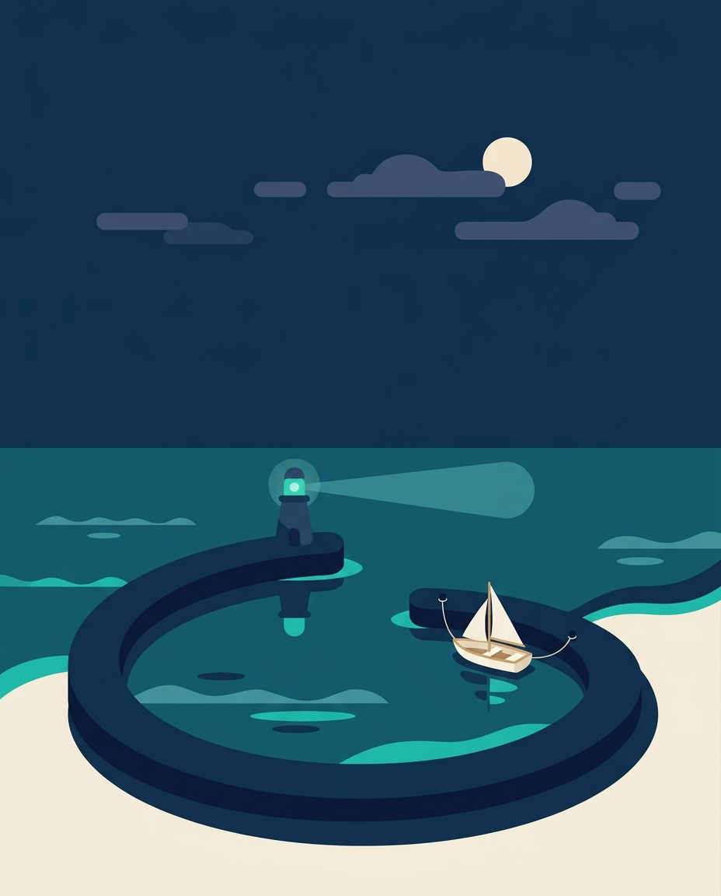
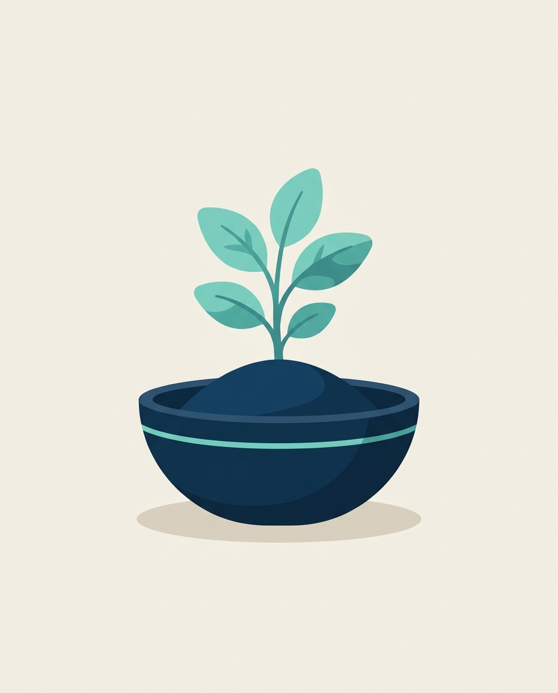
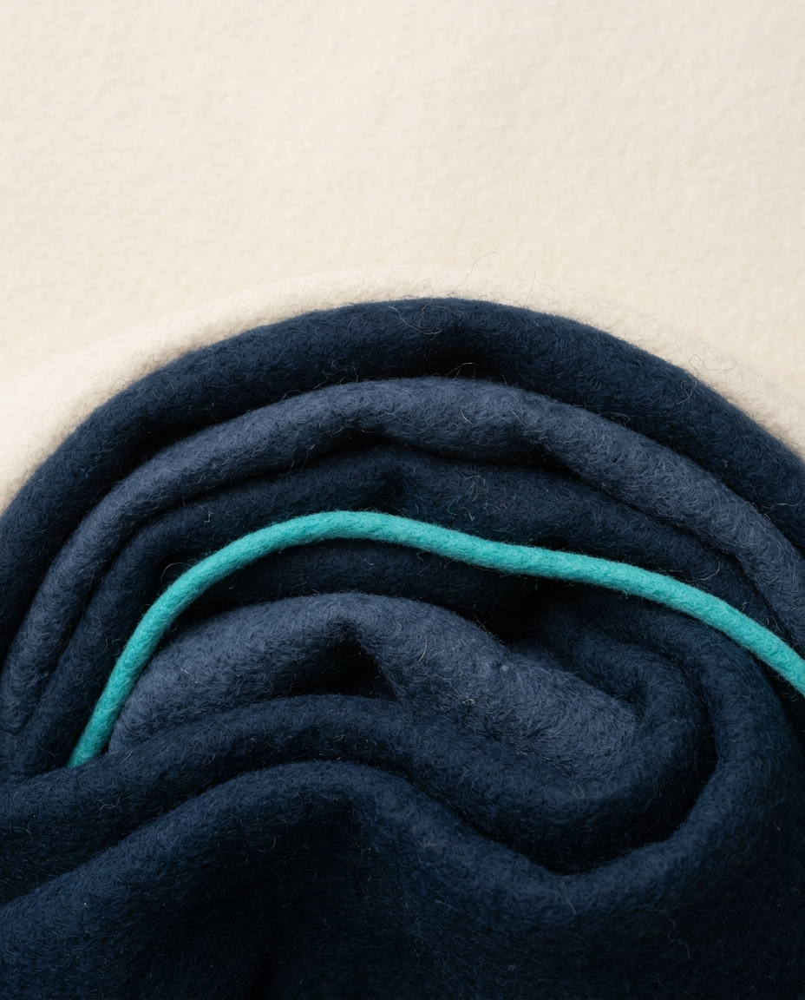
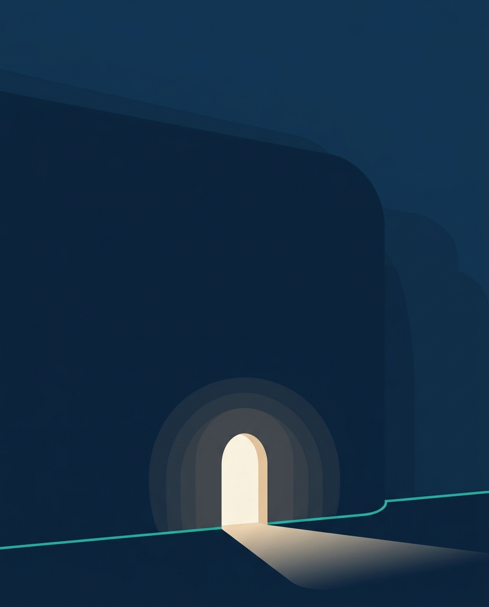
Kâşif
"Hedefini koy, yola çık."
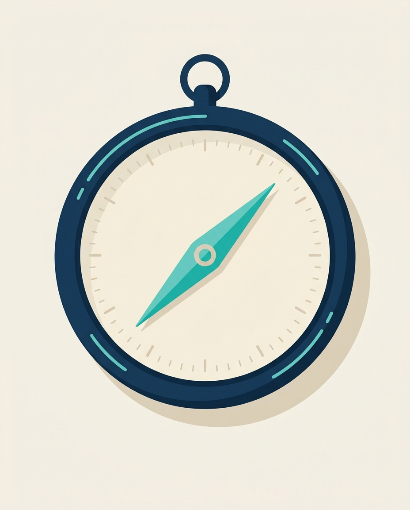
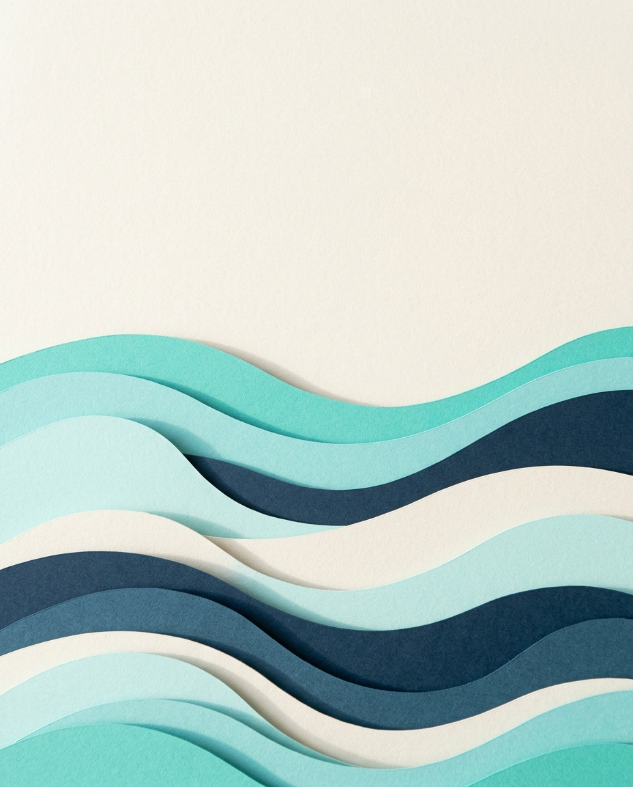
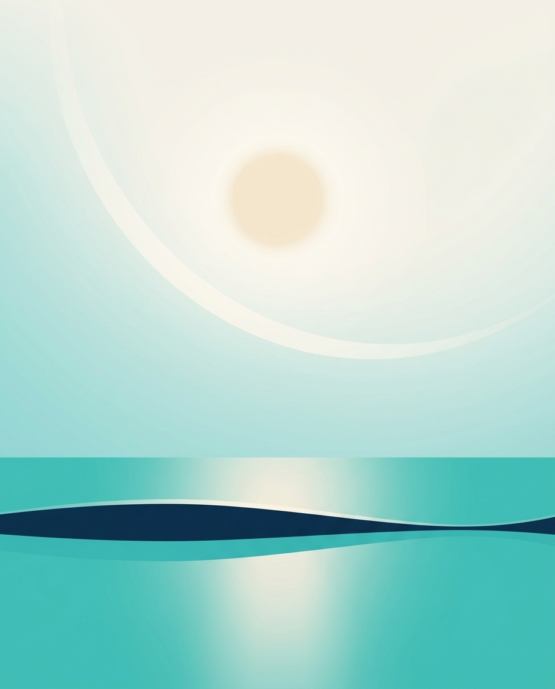
Bilge
"Ne kadar, ne zaman, net."
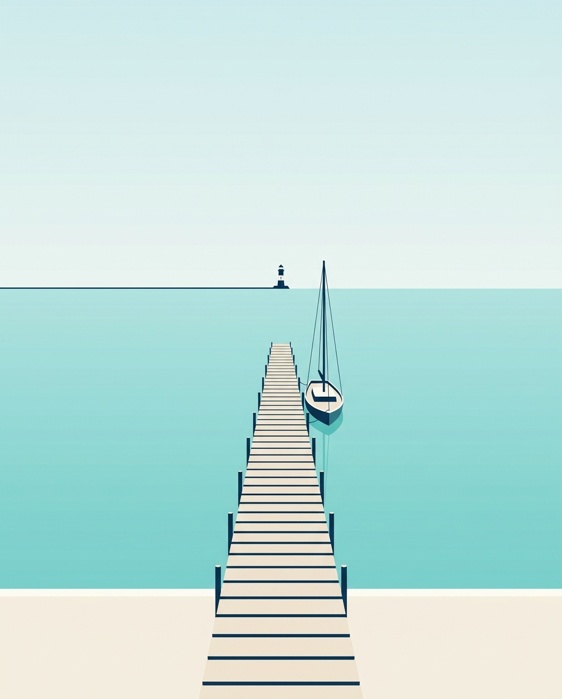
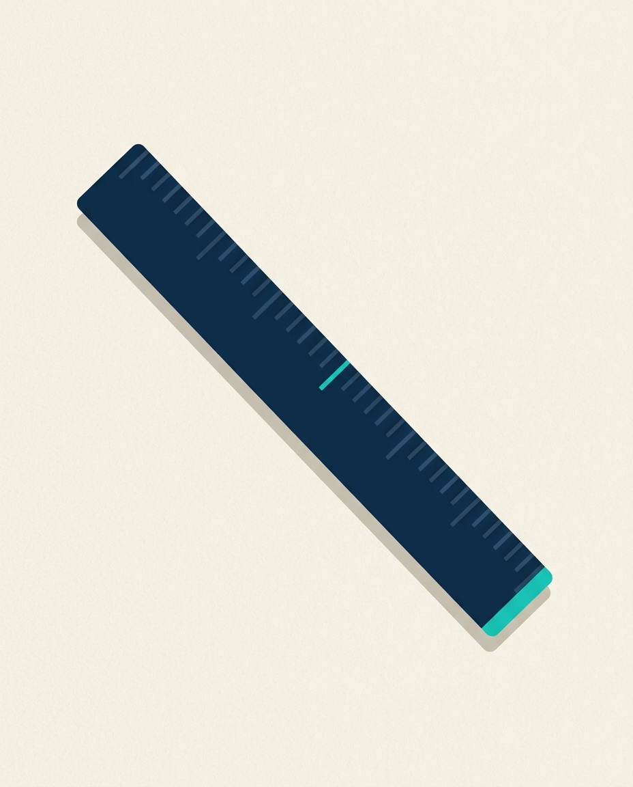
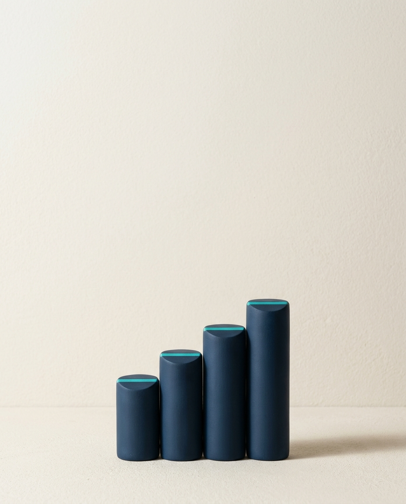
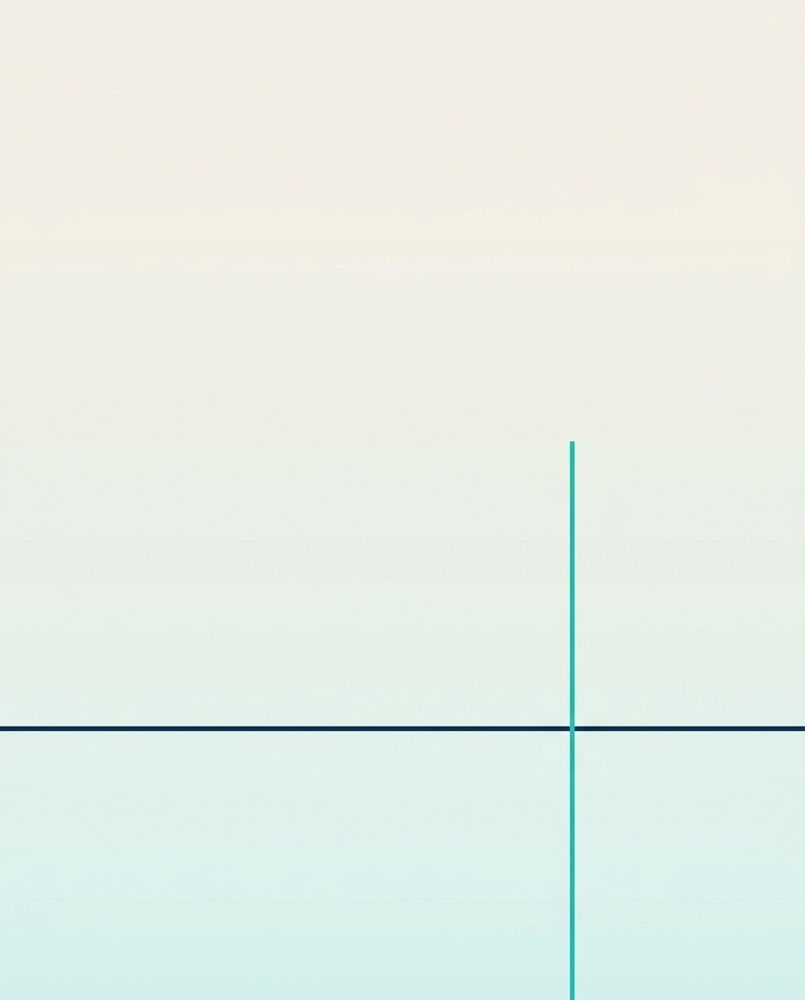
Üç yön, dört kare: sahne · nesne · doku ve malzeme · ışık ve renk
"Birikimin güvende, adım adım."




"Hedefini koy, yola çık."



"Ne kadar, ne zaman, net."



